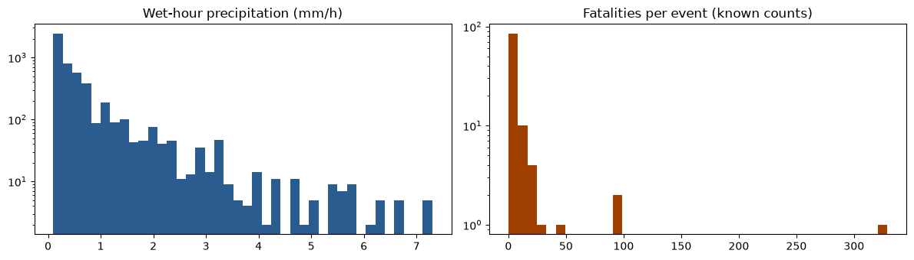
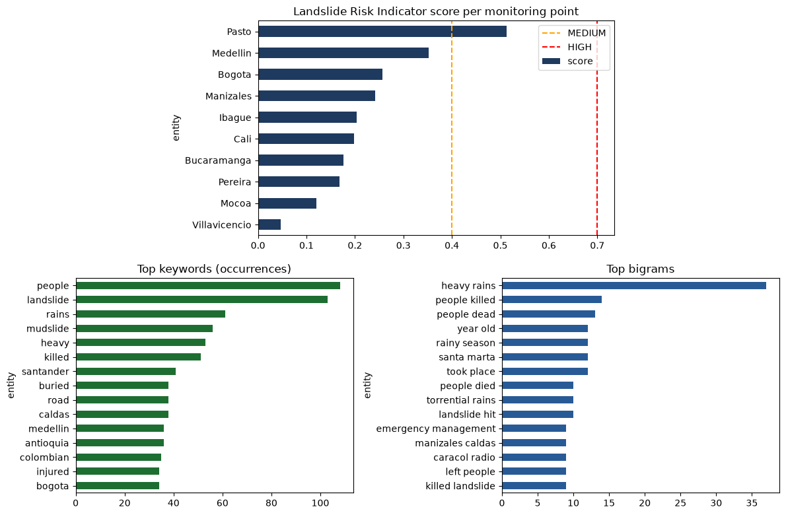
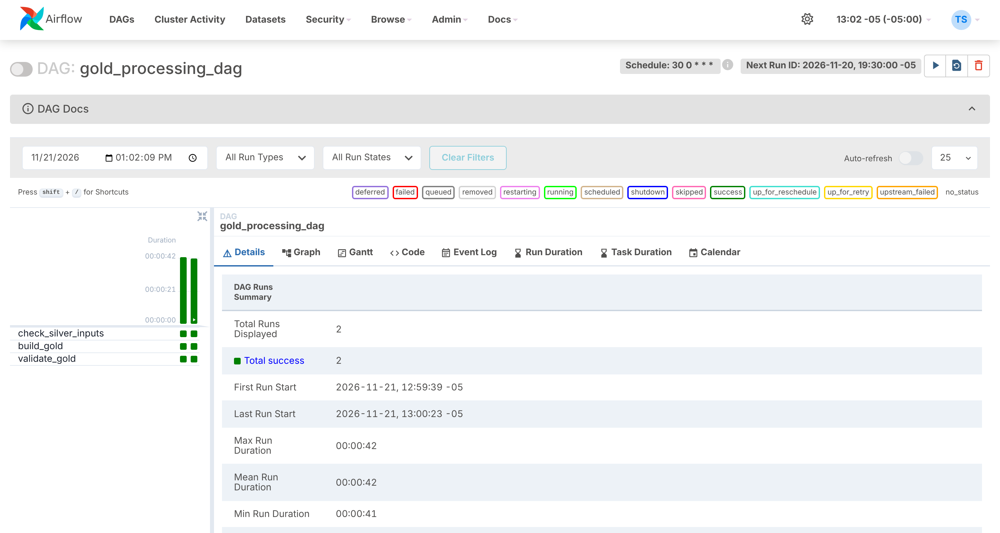
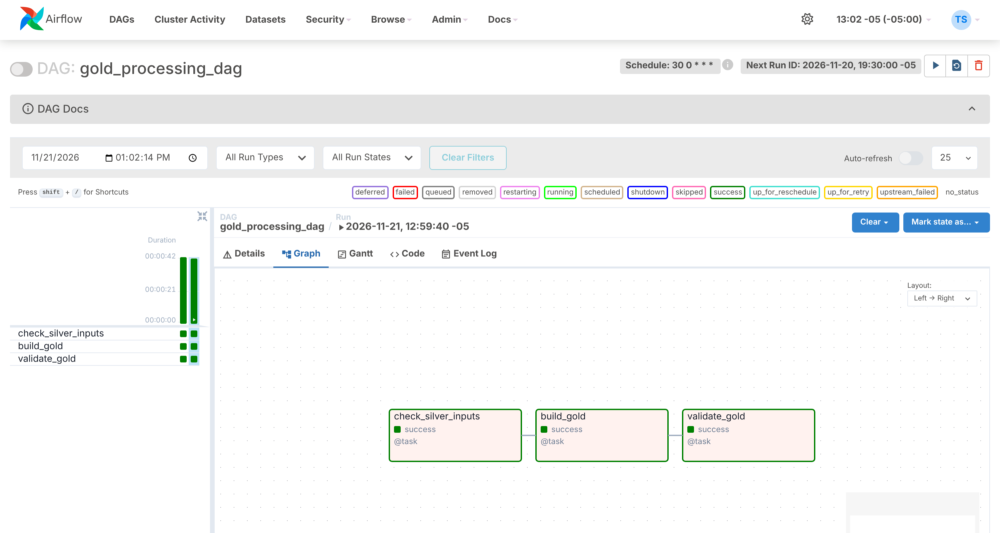
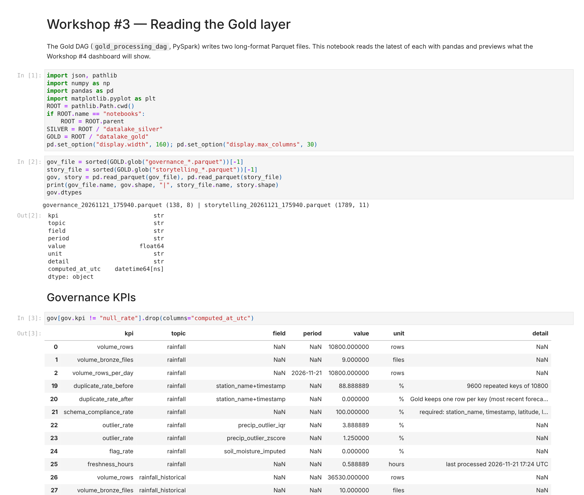

Workshop #2 delivered hourly Bronze ingestion (Open-Meteo forecast API, NASA LHASA scraping, NASA Global Landslide
Catalog, ERA5 archive) and a FileSensor-triggered Silver layer. Workshop #3 (i) improves those pipelines with what the
real runs revealed, and (ii) adds the Gold layer: gold_processing_dag runs PySpark in local mode
inside Airflow, reads each Silver topic folder as one distributed DataFrame and writes two Parquet summaries:
governance_20261121_175940.parquet — 138 governance KPI rows (null rates, volume, duplicates, schema compliance,
outlier and flag rates, text statistics, language, ingestion compliance, freshness, anomalous station-years).storytelling_20261121_175940.parquet — 1,789 storytelling rows in 13 sections that map one-to-one to
dashboard charts: Landslide Risk Indicator per monitoring point, rainfall now vs. history, historical landslides,
keywords and bigrams.Adapting the statement to our hazard. The workshop is written for sentiment analysis. In this project the equivalent of a sentiment label is the risk level (LOW / MEDIUM / HIGH) of the Landslide Risk Indicator defined in Workshop #1, the "opinion trend" is the rainfall trend against its historical percentile, and the text corpus is the landslide narratives of the NASA catalog.
| Observed in the Workshop #2 runs | Before | After (Workshop #3) | Why |
|---|---|---|---|
spark.read.parquet("datalake_silver/") cannot work: four topics with different schemas share one folder | All Silver files in datalake_silver/ | One folder per topic (datalake_silver/rainfall/, …); the writer creates it; scripts/migrate_silver_w3.py moved the existing files | Each folder has one consistent schema and is read as one DataFrame (cloud-folder pattern) |
| Spark 3.5 failed to read Silver: Illegal Parquet type TIMESTAMP(NANOS) | pandas wrote nanosecond timestamps | Writer forces microseconds (coerce_timestamps='us'); existing files converted (values are at most second-precision, nothing lost) | Found when the first Spark job ran |
| 88.9% of rainfall rows repeat a station-hour; values revised between polls | Silver keeps every poll | Gold keeps the most recent poll per station-hour (window function) | Each poll repeats the past 2 days and Open-Meteo revises them |
| ERA5 7-day sums null at every year boundary (600 rows) | Rolling sum per yearly Bronze file | Rolling sums recomputed in Gold across all years (0 nulls after the first days of 2016) | Antecedent rainfall must span New Year |
| Implausible ERA5 totals: Pereira 2016 (14,499 mm), Manizales 2016 (17,122 mm) | Kept and documented only | Station-years above 2× the station median are flagged in governance and excluded from the percentile baseline | They would inflate the historical P90 and hide real anomalies |
| NLP: generic words dominate the GLC tokens (said 83, two 52, least 43 occurrences) | EN+ES stop words only | Domain noise list (reporting verbs, numbers, distance units) in nlp.py and in Gold; bigrams added | Keywords must describe the events, not the news style |
| Timestamps collected from Spark shifted by −5 h | Python collect() converts to the container's local zone | Time differences and formatting done inside Spark (session zone UTC) | Freshness KPIs were wrong by 5 hours in the first Gold run |
| Spark workers failed with a Python version mismatch | Default interpreter | PYSPARK_PYTHON set to the task's interpreter | Driver and workers must match |
| Docker image had no Java | Airflow 2.9.2 + Python libraries | openjdk-17-jre-headless and pyspark==3.5.3 in the Dockerfile; SPARK_DRIVER_MEMORY in compose | PySpark needs a JVM |
Computed with pandas in notebooks/03_data_quality_findings.ipynb and, identically, with PySpark in the
governance file. Silver holds 9 Parquet files:
rainfall 6, rainfall_historical 1, landslides 1, lhasa_hazard 1.
| # | Field | Issue | Frequency / severity | Handling |
|---|---|---|---|---|
| 1 | rainfall: station + hour | Duplicates across polls, values revised | 88.9% repeated keys (9600 repeated keys of 10800) | Latest poll kept in Gold |
| 2 | landslides: time of day | 00:00 = unknown time | 64.2% of events | Flag is_time_unknown; daily resolution for back-testing |
| 3 | landslides: country_name | Null inside the Colombia box (incl. Mocoa 2017) | 7.3% | Kept null + flag; spatial assignment |
| 4 | landslides: fatality_count / injury_count | Unknown counts | 4.6% / 74.3% null | Kept null (never 0) |
| 5 | landslides: event_time, storm_name, notes, photo_link | Empty columns | 100 / 100 / 98 / 87% null | Not used downstream; monitored |
| 6 | landslides: fatality_count | Extreme values | 6.4% IQR flags (Mocoa 329) | Flagged, not removed |
| 7 | rainfall: precipitation_mm | Convective extremes | 3.9% IQR / 1.2% Z flags | Flagged per station over wet hours |
| 8 | rainfall_historical: annual totals | Reanalysis anomaly | 2 station-years > 2× median | Excluded from percentiles |
| 9 | rainfall_historical: precip_7d_mm | Nulls at year boundaries | 1.64% | Recomputed in Gold |
| 10 | rainfall: ingestion | Missing hourly polls | 42% (5 of 12 expected hourly polls between 2026-11-21 06:40 and 2026-11-21 17:23 UTC) | Ingestion-compliance KPI |
| 11 | landslides: narrative text | Length and language | mean 568 chars (min 71, max 1264); 96% English | Text statistics KPI; English+Spanish stop words |
| 12 | lhasa_hazard | One raster per day, only the newest kept | 10 station windows | Daily cadence; freshness KPI |

All KPIs are computed with PySpark in src/gold/transformations.py::build_governance and stored as a long
table (kpi, topic, field, period, value, unit, detail, computed_at_utc), so the governance dashboard (US-06)
filters by kpi.
| KPI | Computation (PySpark) | Justification (finding #) | Latest value |
|---|---|---|---|
| null_rate | Per column: sum(isNull or empty string) / rows | Findings 3, 4, 5, 9 | 89 field rows; e.g. country_name 7.3% |
| volume_rows / volume_bronze_files / volume_rows_per_day | count, countDistinct(_bronze_source_file), groupBy(processing day) | Volume per source and run | rainfall 10,800 rows from 9 polls |
| duplicate_rate_before / _after | (rows − distinct natural keys) / rows; after Gold dedup = 0 | Finding 1 (GLC and ERA5 have none: kept as preventive KPI) | rainfall 88.9% → 0% |
| schema_compliance_rate | Required fields non-null and inside physical bounds | Silver contract | rainfall 100%, rainfall_historical 100%, landslides 100%, lhasa_hazard 100% |
| outlier_rate | avg(flag) per numeric flag column | Findings 6, 7 | precip IQR 3.9% |
| flag_rate | avg(flag) for quality flags | Findings 2, 3, 4 | is_time_unknown 64.2% |
| text_length_* / tokens_per_record_mean | length(narrative): mean, percentile_approx 0.5, min, max | Finding 11 | median 577 chars |
| language_share | English vs Spanish marker words per narrative (array_intersect) | Finding 11 | es 3.7%, en 96.3% |
| ingestion_compliance | Distinct hourly polls / expected hours; ERA5 years / 10 | Finding 10 | rainfall 42%, ERA5 100% |
| freshness_hours | run time − max(_processed_at_utc), in Spark (UTC) | US-06 (detect outages) | rainfall 0.6 h |
| anomalous_station_year | annual total > 2× station median | Finding 8 | 2 rows |
Narrative. "Which Andean areas of Colombia are at landslide risk right now, and is the rain falling there unusual for this time of year?" The functional user (UNGRD analyst) should leave the dashboard knowing which monitoring points to watch, whether that is driven by rain that is high for the season, and whether those places have a history of deadly landslides.
| Section (rows) | Aggregation (PySpark) | User story | Dashboard element |
|---|---|---|---|
| station_risk (100) | Latest poll per station; P24h (next 24 h), 5-day antecedent, November 5-day P90 from ERA5, LHASA P90, GLC events within 30 km; LRI score and level | US-01, US-02, US-03 | Map + table of risk |
| risk_level_distribution (3) | Count of points per level (the analogue of a sentiment distribution) | US-01 | KPI cards |
| hourly_rainfall (1200) | Hourly series of the latest poll, observed vs forecast | US-02 | Line chart |
| daily_rain_vs_history (50) | Daily totals vs historical daily P90 of the month | US-03 | Bar + threshold |
| monthly_climatology (240) | Mean daily rain and 5-day P90 per station and month (anomalous years excluded) | US-03 | Seasonal profile |
| landslides_by_year / trigger / size / department (90) | Events and known fatalities per category | US-04 | Bar charts |
| landslides_near_station (35) | Haversine join of points and GLC events ≤ 30 km | US-04 | Map layer |
| top_keywords (50), top_bigrams (20) | Token and bigram frequencies after noise removal; mean fatalities of events containing each keyword (the analogue of keyword-sentiment association) | US-04 | Word bars |
| narrative (1) | Key insight sentence generated from the data | US-01 | Header text |
Risk levels: LOW 9, MEDIUM 1, HIGH 0 of 10 monitoring points. LRI (Workshop #1): S = 0.35·min(1, P24h/75 mm) + 0.35·min(1, Pant/P90hist) + 0.20·HLHASA + 0.10·min(1, D30km/5). Because each forecast poll covers 5 days (2 past + 3 forecast), the antecedent term uses 5-day sums on both sides instead of the 7-day sums planned in Workshop #1.
| point | level | score | p24h_mm | p_ant_mm | p90_ant_hist_mm | ratio_vs_p90 | h_lhasa | events_30km | fatalities_30km |
|---|---|---|---|---|---|---|---|---|---|
| Pasto | MEDIUM | 0.51 | 16.1 | 107.2 | 108.8 | 0.99 | 0.16 | 3.0 | 14.0 |
| Medellin | LOW | 0.35 | 11.0 | 31.3 | 61.3 | 0.51 | 0.11 | 9.0 | 157.0 |
| Bogota | LOW | 0.26 | 3.2 | 19.7 | 43.1 | 0.46 | 0.01 | 4.0 | 13.0 |
| Manizales | LOW | 0.24 | 4.3 | 31.9 | 96.3 | 0.33 | 0.03 | 7.0 | 94.0 |
| Ibague | LOW | 0.20 | 7.5 | 47.1 | 99.9 | 0.47 | 0.02 | 0.0 | null |
| Cali | LOW | 0.20 | 3.4 | 26.4 | 105.7 | 0.25 | 0.07 | 4.0 | 6.0 |
| Bucaramanga | LOW | 0.18 | 2.9 | 19.7 | 111.9 | 0.18 | 0.01 | 5.0 | 9.0 |
| Pereira | LOW | 0.17 | 1.4 | 31.7 | 93.4 | 0.34 | 0.01 | 2.0 | 13.0 |
| Mocoa | LOW | 0.12 | 4.7 | 22.7 | 107.8 | 0.21 | 0.02 | 1.0 | 329.0 |
| Villavicencio | LOW | 0.05 | 1.1 | 8.5 | 77.3 | 0.11 | 0.01 | 0.0 | null |
Top keywords: people (108; mean fatalities 12.3), landslide (103; mean fatalities 13.5), rains (61; mean fatalities 5.3), mudslide (56; mean fatalities 4.9), heavy (53; mean fatalities 18.2), killed (51; mean fatalities 10.5), santander (41; mean fatalities 3.2), caldas (38; mean fatalities 9.8). Top bigrams: heavy rains (37), people killed (14), people dead (13), rainy season (12), santa marta (12), took place (12).

SparkSession.builder.master("local[*]"), spark.driver.memory=1g (env
SPARK_DRIVER_MEMORY), spark.sql.shuffle.partitions=4, spark.sql.session.timeZone=UTC,
UI disabled, mergeSchema=true; PYSPARK_PYTHON pinned to the task interpreter.spark.read.parquet("datalake_silver/<topic>/") per topic — all accumulated files as one DataFrame.row_number to keep the latest poll; window sums across years for antecedent
rainfall; percentile_approx for P90 baselines; cross join + haversine for the 30 km radius; filter,
explode and transform/sequence higher-order functions for keywords and bigrams; unionByName
to build the long tables.coalesce(1).write.parquet to a temporary folder, then the part file is moved to
datalake_gold/<name>_YYYYMMDD_HHMMSS.parquet (never overwriting).gold_processing_dag: daily at 00:30 UTC, catchup=False, 1 retry, 30-min timeout.
Tasks: check_silver_inputs → build_gold (Spark job) → validate_gold (both files non-empty).pyspark==3.5.3 added to the image; no extra service is needed in local mode.| DAG run | State | Task | Task state | Seconds |
|---|---|---|---|---|
scheduled__2026-11-20T00:30:00+00:00 | success | check_silver_inputs | success | 0.1 |
scheduled__2026-11-20T00:30:00+00:00 | success | build_gold | success | 36.9 |
scheduled__2026-11-20T00:30:00+00:00 | success | validate_gold | success | 0.2 |
manual__2026-11-21T17:59:40+00:00 | success | check_silver_inputs | success | 0.1 |
manual__2026-11-21T17:59:40+00:00 | success | build_gold | success | 35.9 |
manual__2026-11-21T17:59:40+00:00 | success | validate_gold | success | 0.2 |
Runs executed with Airflow 2.10.5 (pip, SequentialExecutor) on the development machine with the same DAG file; the Docker image was updated for PySpark but not rebuilt for this report.

gold_processing_dag in the Airflow UI: scheduled and manual runs, all tasks successful.
gold_processing_dag graph: check_silver_inputs → build_gold → validate_gold.
04_gold_preview.ipynb).Governance file governance_20261121_175940.parquet (first rows):
| kpi | topic | field | period | value | unit | detail |
|---|---|---|---|---|---|---|
| volume_rows | rainfall | null | null | 10800.00 | rows | null |
| volume_bronze_files | rainfall | null | null | 9.00 | files | null |
| volume_rows_per_day | rainfall | null | 2026-11-21 | 10800.00 | rows | null |
| duplicate_rate_before | rainfall | station_name+timestamp | null | 88.89 | % | 9600 repeated keys of 10800 |
| duplicate_rate_after | rainfall | station_name+timestamp | null | 0.00 | % | Gold keeps one row per key (most recent forecast poll) |
| schema_compliance_rate | rainfall | null | null | 100.00 | % | required: station_name, timestamp, latitude, longitude, precipitation_mm |
| outlier_rate | rainfall | precip_outlier_iqr | null | 3.89 | % | null |
| outlier_rate | rainfall | precip_outlier_zscore | null | 1.25 | % | null |
| flag_rate | rainfall | soil_moisture_imputed | null | 0.00 | % | null |
| freshness_hours | rainfall | null | null | 0.59 | hours | last processed 2026-11-21 17:24 UTC |
| volume_rows | rainfall_historical | null | null | 36530.00 | rows | null |
| volume_bronze_files | rainfall_historical | null | null | 10.00 | files | null |
Storytelling file storytelling_20261121_175940.parquet (risk rows):
| section | user_story | entity | department | latitude | longitude | period | metric | value | text |
|---|---|---|---|---|---|---|---|---|---|
| station_risk | US-01 | Bogota | Cundinamarca | 4.67 | -74.11 | 2026-11-21 12:23 UTC | score | 0.26 | LOW |
| station_risk | US-01 | Pereira | Risaralda | 4.82 | -75.72 | 2026-11-21 12:23 UTC | score | 0.17 | LOW |
| station_risk | US-01 | Villavicencio | Meta | 4.11 | -73.63 | 2026-11-21 12:23 UTC | score | 0.05 | LOW |
| station_risk | US-01 | Bucaramanga | Santander | 7.14 | -73.11 | 2026-11-21 12:23 UTC | score | 0.18 | LOW |
| station_risk | US-01 | Ibague | Tolima | 4.39 | -75.20 | 2026-11-21 12:23 UTC | score | 0.20 | LOW |
| station_risk | US-01 | Mocoa | Putumayo | 1.09 | -76.60 | 2026-11-21 12:23 UTC | score | 0.12 | LOW |
| station_risk | US-01 | Pasto | Narino | 1.30 | -77.35 | 2026-11-21 12:23 UTC | score | 0.51 | MEDIUM |
| station_risk | US-01 | Cali | Valle del Cauca | 3.48 | -76.52 | 2026-11-21 12:23 UTC | score | 0.20 | LOW |
| station_risk | US-01 | Manizales | Caldas | 5.10 | -75.52 | 2026-11-21 12:23 UTC | score | 0.24 | LOW |
| station_risk | US-01 | Medellin | Antioquia | 6.22 | -75.55 | 2026-11-21 12:23 UTC | score | 0.35 | LOW |
array_except silently de-duplicated tokens and distorted the
keyword counts (replaced by filter). Each is fixed and listed in Section 2.datalake_gold/; every section of the storytelling file is one chart.